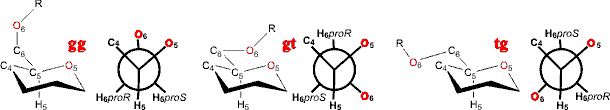

Partial pectin structure

Polysaccharides are polymeric carbohydrates composed of monosaccharides arranged in chains.
Polysaccharidesa have been proposed as the first biopolymers to have formed on Earth [584]. They are classified (see Nomenclature) based on their main monosaccharide components and the sequences and linkages between them, as well as the anomeric configuration of linkages, the ring size (furanose or pyranose), the absolute configuration (D- or L-) and any other substituents present. Certain structural characteristics such as chain conformation and intermolecular associations will influence the physicochemical properties of polysaccharides. The most stable arrangement of atoms in a polysaccharide will be that which satisfies both the intra-molecular and inter-molecular forces. Regularly ordered polysaccharides, in general, are capable of assuming only a limited number of conformations due to severe steric restrictions on the freedom of rotation of sugar units about the inter-unit glycosidic bonds. There is also a clear correlation between allowed conformations and linkage structure.
The structural non-starch polysaccharides, such as cellulose and xylan, have preferred orientations that automatically support extended conformations. Storage polysaccharides such as the chains in amylopectin tend to adopt wide helical conformations. The degree of stiffness and regularity of polysaccharide chains is likely to affect the rate and extent of their fermentation. Pentose sugars such as arabinose and xylose can adopt one of two specific conformations, furanose rings (often formed by arabinose) that can oscillate and are more flexible, and pyranose rings (usually formed by xylose and glucose) which are less flexible. Cereal arabinoxylans are composed of β-linked xylan chains and are relatively stiff molecules with extended conformations. The flexibility of arabinoxylans is decreased with increasing arabinosylation, but the key parameter is likely to be the distribution of these side chains along the backbone since this will have the most direct effect on the conformation. Also, due to their extended conformation, arabinoxylans exhibit a very high viscosity in aqueous solutions. Pectins containing galacturonic acid residues form more flexible extended conformations and have regular "hairy" regions with pendant arabinogalactans.
Carbohydrates, especially those containing
large numbers of hydroxyl groups, are often thought of as
being hydrophilic. However, they are also capable of generating
apolar surfaces depending on the monomer ring conformation,
the epimeric structure, and the stereochemistry of the glycosidic
linkages. Apolarity has been shown for dextrin, α-(1 4)-linked
glucans, while dextrans, α-(1
4)-linked
glucans, while dextrans, α-(1 6)
glucans, and cellulose, β-(1
6)
glucans, and cellulose, β-(1 4)-glucans,
are much less hydrophobic (in solution) and unable to project
an apolar surface. Hydrophobicity will also be affected by
the degree of polysaccharide hydration, particularly the amount
of intra-molecular hydrogen-bonding. Hydrophobicity will affect
their availability for fermentation in the gut and their binding
to bile acids.
4)-glucans,
are much less hydrophobic (in solution) and unable to project
an apolar surface. Hydrophobicity will also be affected by
the degree of polysaccharide hydration, particularly the amount
of intra-molecular hydrogen-bonding. Hydrophobicity will affect
their availability for fermentation in the gut and their binding
to bile acids.
Polysaccharides are stiffer and more hydrophobic if they have a greater number of internal hydrogen bonds. These internal hydrogen bonds may be manipulated by derivatization [3785]. As their hydrophobicity increases, there is less direct interaction with water. Carbohydrates contain hydroxyl (alcohol) groups that preferentially interact with two water molecules each if they are not interacting with other hydroxyl groups on the molecule. Interaction with hydroxyl groups on the same or neighboring residues will necessarily reduce the polysaccharide's hydration status. β-linkages to the 3- and 4- positions in mannose or glucose homopolymers allow strong, inflexible inter-residue hydrogen-bonding, so reducing polymer hydration and giving rise to rigid, inflexible structural polysaccharides whereas α-linkages to the 2-, 3-, and 4- positions in mannose or glucose homopolymers give rise to greater aqueous hydration and more flexible linkages [791]. c
Sugar residues have a specific conformation, often the so-called 4C1 chair conformation. This is illustrated on the right below where the ring oxygen is at the back, the 4-carbon is 'up', and the 1-carbon is 'down'. Conversely, furanose rings can oscillate and have a more flexible structure than pyranose rings, which means they are less likely to have a fixed interaction with a molecule of water as energy will be lost in this process.
Rotations occurring in polysaccharide links
The flexibility of polysaccharide chains depends on the ease of rotation around the anomeric links (see terminology, the torsion angles phi (φH, H1C1OC4 or H1C1OC6), psi (ψH, C1OC4H4 or C1OC6C5) and omega (ωH, OC6C5H5) are shown) b.
Transglycosidic hydrogen bonding between sugar residues were investigated by molecular dynamics and NMR spectroscopy in D2O:DMSO -d6 (70:30) [3643]. These two methodologies do not always give the same results, but this has been reconciled [3994].
Potential energy landscape for linear beta-xylans
Rotation changes the energy of the structure,
and this can be visualized as a potential energy map (as
shown for a β-(1 4)-xylan).
In this case, there are two main potential energy minima
(at A and B), and the molecule can be seen to be rather
flexible, with a low-energy route (shown
in red) between them. Such differences in conformation
can lead to effects on
viscosity. d
4)-xylan).
In this case, there are two main potential energy minima
(at A and B), and the molecule can be seen to be rather
flexible, with a low-energy route (shown
in red) between them. Such differences in conformation
can lead to effects on
viscosity. d
Polysaccharide linkage through the methyl hydroxyl group
(for example, in α-(1 6)
linked dextrans) are more flexible due to the extra degree
of freedom in the link (ω).
Such molecules often prefer trans conformations, around this
bond, relative to one of the three other bonds neighboring
the linking carbon atom (for example, O6 trans to the H5
is the gauche, gauche (gg)
conformation (ωH, OC6C5H5 ≈ 180°); O6 trans to the O5 is the tg conformation (ωH ≈ 60°); O6 trans to the C4 is the gt conformation (ωH ≈ 300°)).
6)
linked dextrans) are more flexible due to the extra degree
of freedom in the link (ω).
Such molecules often prefer trans conformations, around this
bond, relative to one of the three other bonds neighboring
the linking carbon atom (for example, O6 trans to the H5
is the gauche, gauche (gg)
conformation (ωH, OC6C5H5 ≈ 180°); O6 trans to the O5 is the tg conformation (ωH ≈ 60°); O6 trans to the C4 is the gt conformation (ωH ≈ 300°)).
Interactions with the aqueous solvent may determine the preferred conformation by disrupting intramolecular hydrogen bonding [254].
Rotamers around the C5-C6 bond

Although 'glycans' are defined similarly to polysaccharides, they may also refer to the covalently-attached carbohydrate portions (oligosaccharides) of glycoproteins, glycolipids and proteoglycans. Glycans are commonly linked to proteins (forming glycoproteins) through a nitrogen or oxygen link.
a Carbohydrate web resources have been collected [611]. [Back]
b Strictly speaking, the torsions are defined as φ, OringC1OCi, ψ, C1OCiCi-1 and ω, OCiCi-1Ci-2 but the use of the hydrogen atoms as shown is easier and often used. [Back]
c Molecular dynamics studies show cello-oligosaccharides have greater surrounding water molecules (compared with malto-oligosaccharides) due to their more extended structure [864]. This does not correspond to the situation with the polymers where the cello-polysaccharides (e.g., cellulose) are insoluble, and the malto-polysaccharides (e.g., amylose) are moderately soluble. [Back]
d Hyperchem, using the AMBERS force field, was used for the modeling presented on these pages. [Back]
Home | Site Index | Polysaccharide hydration | Hydrocolloids | Hydrogen bonding | Hofmeister Series | Biphasic systems | LSBU | Top
This page was established in 2001 and last updated by Martin Chaplin on 25 October, 2021